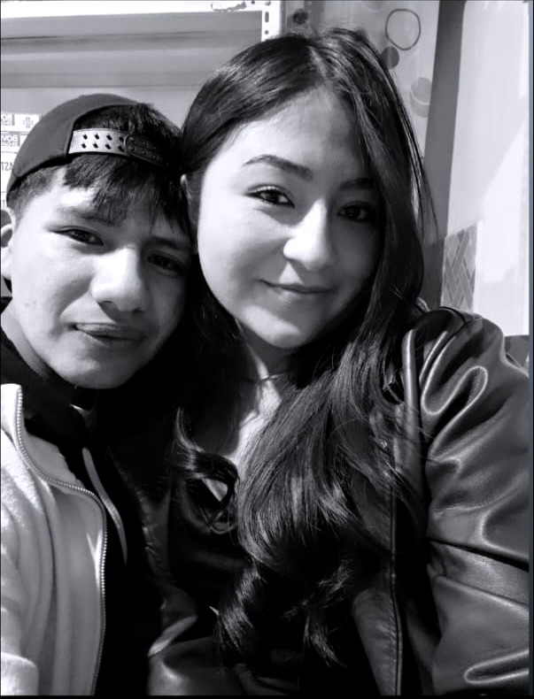

Para Eymiamor 💛
De todas las cosas lindas, mi favorita es coincidir contigo.
Feliz día de las flores amarillas. Que esta sea solo la primera de muchas fotos,
muchas gerberas y muchos momentos juntos.
Con amor, tu Ing.